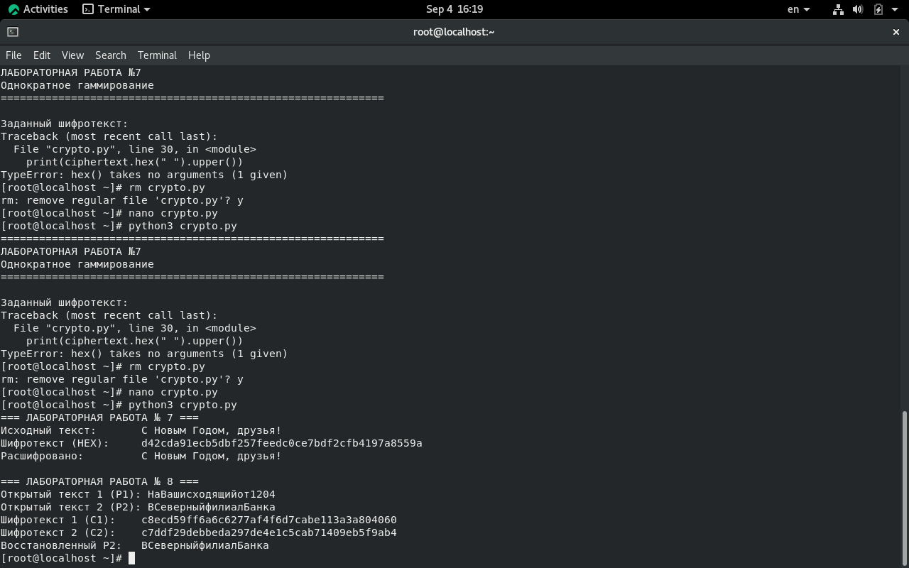

Лабораторная работа № 8
Элементы криптографии. Шифрование различных текстов одним ключом
Цель и задачи работы
Цель работы: освоить гаммирование разных текстов одним ключом.
Задачи: 1. Получить два шифротекста и проверить расшифрование. 2. Выразить способ исключения гаммы аналитически. 3. Прочитать сообщения по шаблону и смысловой гипотезе. 4. Проверить совпадение с исходными данными.
Гипотеза: при повторении гаммы известные позиции одного текста раскрывают те же позиции другого.
Материалы и методы
- Операционная система: Rocky Linux 9.8, интерпретатор Python 3.9.25, среда виртуализации VirtualBox.
- Учётная запись и хост:
asitskov. - Инструменты: побайтовый XOR, кодировка текста cp1251, файлы в UTF-8.
- Интерфейс командной строки: модуль
argparseс пятью режимами работы приложения. - Исходные данные: две телеграммы и ключ длиной по 20 байт.
- Методы контроля: табличные и побайтовые сравнения сохранённых файлов.
Теоретическая часть: исключение повторённой гаммы
Аналитическое выражение процесса шифрования двух сообщений одним ключом:
\[C_1 = P_1 \oplus K, \qquad C_2 = P_2 \oplus K\]
При побайтовом сложении двух шифротекстов ключ сокращается, поскольку \(K \oplus K = 0\):
\[C_1 \oplus C_2 = P_1 \oplus P_2\]
Отсюда можно выразить один открытый текст через другой:
\[P_2 = C_1 \oplus C_2 \oplus P_1\]
Известный фрагмент или шаблон раскрывает соответствующие позиции другого текста.
Ход выполнения работы
Проверка программы
Проверка синтаксиса завершилась успешно. Контрольная сумма SHA-256 исходного файла совпала с рабочей версией.

Исходные телеграммы
Подготовлены две строки без пробелов и один ключ длиной 20 байт. Использована кодировка cp1251; обнаруженная ошибочная HEX-пара OB исправлена на 0B.
Шифрование первой телеграммы
Получен шифротекст \(C_1\) для сообщения «НаВашисходящийот1204». Каждый байт сообщения преобразован соответствующим байтом ключа \(K\).
Шифрование второй телеграммы
Получен шифротекст \(C_2\) для сообщения «ВСеверныйфилиалБанка» с использованием того же ключа с начального байта.
Обратное расшифрование
- \(C_1 \oplus K\) вернул исходный текст «НаВашисходящийот1204».
- \(C_2 \oplus K\) вернул исходный текст «ВСеверныйфилиалБанка».
- Оба сравнения с оригиналами завершились с кодом возврата
cmp exit=0. - Длины при каждом преобразовании составили 20 байт.
Побайтовая проверка
| Позиция | P1 | P2 | C1 | C2 | P1 XOR P2 | C1 XOR C2 |
|---|---|---|---|---|---|---|
| 1 | CD | C2 | C8 | C7 | 0F | 0F |
| 8 | F5 | FB | 27 | 29 | 0E | 0E |
| 13 | E8 | E8 | CA | CA | 00 | 00 |
| 16 | F2 | C1 | 3A | 09 | 33 | 33 |
| 20 | 34 | E0 | 60 | B4 | D4 | D4 |
Последние два столбца побайтовой таблицы равны. Проверка полной таблицы дала результат True во всех 20 позициях.
Восстановление сообщений без ключа
В распоряжении наблюдателя имеются только \(C_1\), \(C_2\) и исполняемый файл программы. Режим recover не принимает ключ.
Вычисление \(C_1 \oplus C_2\) позволяет установить прямую связь между открытыми текстами \(P_1\) и \(P_2\) без знания ключа.
Применение известного шаблона «НаВашисходящийот» (16 байт на смещении 0) раскрывает начало текста \(P_2\).
Смысловая гипотеза о конце «Банка» на смещении 15 позволяет раскрыть хвост первой телеграммы «т1204».
После проверки перекрывающейся буквы «т» собран полный открытый текст \(P_1\) длиной 20 байт.
По собранному \(P_1\) успешно восстановлен текст «ВСеверныйфилиалБанка» без передачи или определения ключа.
Проверки и итоговые результаты
- Выполнено обратное восстановление \(P_1\), сравнение с оригиналом дало код
0. - Проведена сверка всех восстановленных данных с оригиналами.
- Все итоговые проверки (расшифрование, равенство XOR, сохранённые файлы) вернули успешные результаты (
True). - Проверка защиты при подаче некорректной длины ключа (2 байта для 20-байтового текста) корректно завершилась с ошибкой
exit=1.
Заключение
В ходе выполнения лабораторной работы были успешно реализованы процедуры шифрования, расшифрования и чтения по фрагменту. Получены два 20-байтовых шифротекста, аналитически и побайтово продемонстрировано сокращение одинаковой гаммы. Обе телеграммы полностью восстановлены без использования секретного ключа, что на практике доказывает уязвимость повторного использования одноразовых блокнотов. Цель работы достигнута.